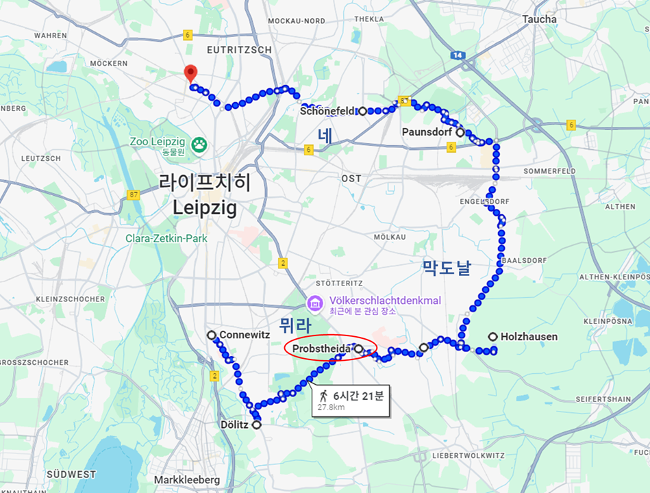
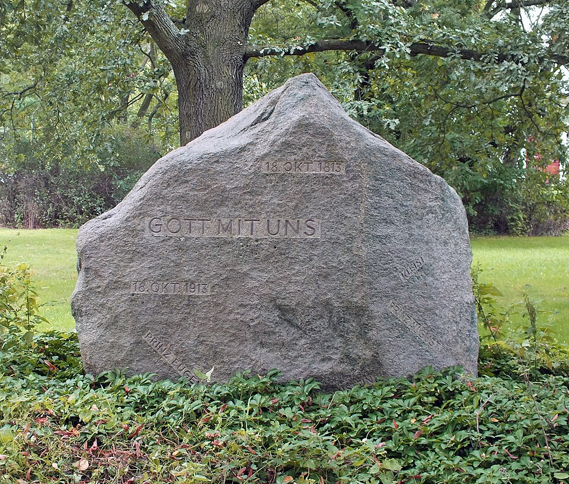
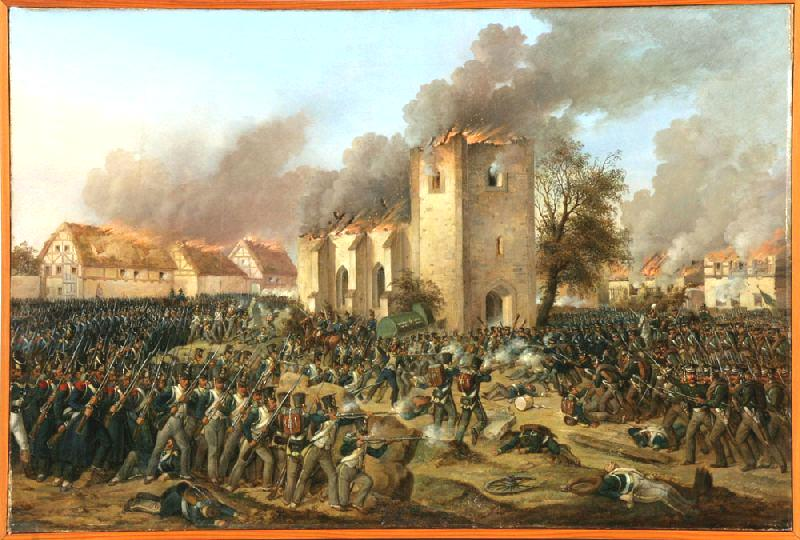
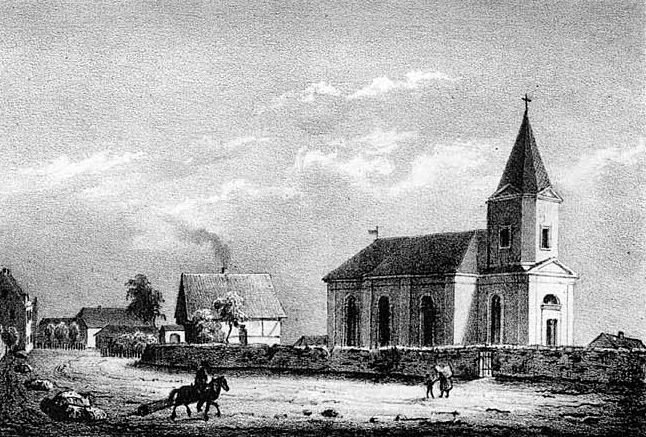
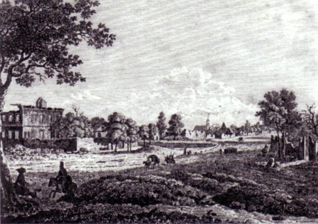
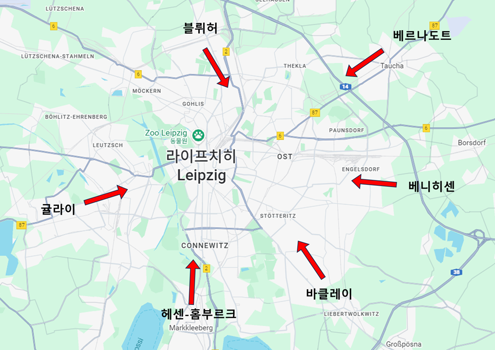

라이프치히 전투 (26) - 계획은 단순하게
게시: 2025-12-01T06:30:53+09:00
축소된 나폴레옹의 새 방어선에서, 중앙과 좌우익의 지휘는 각각 다음과 같았고, 나폴레옹은 뮈라와 막도날 사이의 중심지인 프롭스트하이더(Probstheida)에 자리를 잡았습니다. 좌익 (남쪽) - 뮈라 : 오쥬로의 제9군단, 포니아토프스키의 제8군단, 빅토르의 제1군단, 그리고 예비대 (고참근위대와 제1기병군단) 중앙 (동쪽) - 막도날 : 막도날의 제11군단, 로리스통의 제5군단, 제2기병군단, 그리고 예비대 (모르티에의 신참근위대 제2군단과 돔브로브스키의 폴란드 사단) 우익 (북쪽) - 네 : 마르몽의 제6군단, 레이니에의 제7군단, 그리고 예비대 (수암의 제3군단)

(나폴레옹 방어진의 대략적인 구성입니다. 나폴레옹의 사령부가 있던 프롭스트하이더는 전체 방어진의 중심부라기보다는 연합군의 주력인 보헤미아 방면군을 상대하는 중앙점으로서, 나폴레옹은 어디까지나 보헤미아 방면군을 적의 주력으로 생각했다는 것을 확실히 보여줍니다. 네와 막도날 사이가 좀 멀어 보이긴 하는데, 실제로 저 파운스도르프 인근에 4~5km의 정도 아무도 지키지 않는 구역이 존재했습니다.)
(프롭스트하이더(Probstheida)라는 이름에서 heida라는 단어는 임야를 개간하여 만든 개간지를 뜻합니다. Probst라는 단어는 '수도원에 딸린' 정도의 뜻을 가지는데, 13세기 경에 당시 이 마을을 소유하고 있던 영주가 이 마을을 아우구스티누스 수도원에 넘겨주면서 이런 이름이 붙었다고 합니다. 이 곳에는 1913년에 보시는 바와 같이 거대한 라이프치히 전투 기념비(Völkerschlachtdenkmal)가 세워졌고, 지금도 그 웅장한 모습을 볼 수 있습니다. 라이프치히 전투를 보통 Battle of Nations, 즉 여러 민족들의 전투라고 부르는데, 이는 독일에서 이 전투를 Völkerschlacht, 즉 여러 민족들의(Völker) 전투(schlacht)라고 불렀기 때문입니다. Denkmal은 글자 그대로 기념비라는 뜻입니다.)

(프롭스트하이더의 이 기념비는 훨씬 작은 규모의 바윗돌로서, 1813년 10월 18일의 전투를 기념하고 있습니다. GOTT MIT UNS 라는 것은 그냥 "God with us", 즉 신께서 우리와 함께 하신다는 뜻인데, 당시, 그리고 그 이후에도 프로이센군이 많이 쓰던 구호입니다. 바윗돌 여기저기에 PRINZ EUGEN (오이겐 대공), KLEIST(클라이스트) 등 연합군 장군들의 이름이 보입니다.)

(이 그림은 1813년 10월 18일, 제3일차 전투에서 연합군이 프롭스트하이더를 공격하면서 이 마을의 교회가 불타는 모습을 묘사하고 있습니다.)

(윗 그림에서 불타는 교회가 전투 직후에 재건된 모습입니다.) 이 방어진에서 누가 봐도 우익이 가장 취약했습니다. 레이니에의 제7군단은 강행군 끝에 바로 전날 오후 늦게나 도착하여 무척 피로했고, 마르몽의 제6군단은 원래 매우 강력한 군단이었지만 제1일차 전투에서 블뤼허의 슐레지엔 방면군 전체를 혼자서 상대하다 입은 피해가 컸습니다. 게다가 예비대로 배정된 수암의 제3군단은 원래부터 사단별로 분할되어 여기저기 보충병 역할을 하고 있었으므로 상대적으로 취약했습니다. 이렇게 우익이 상대적으로 취약했던 것은 나폴레옹이 여전히 블뤼허를 깍뚜기 부대 정도로 취급했고, 베르나도트가 18일의 공격에 참여할 것이라고는 생각치 않았기 때문이기도 했지만, 실은 지형 문제가 가장 컸습니다. 블뤼허든 베르나도트든 네를 공격하기 위해서는 파르터강을 건너야 헸는데, 그것이 쉬울 리가 없었기 때문입니다. 물론 네가 지키는 지역을 우회해서 건넌다면 쉽겠습니다만, 그럴 경우 시간이 꽤 흐를 것이고, 그때 즈음이면 나폴레옹은 이미 서쪽으로 철수를 시작한 뒤일 것이라는 계산이었습니다. 하지만 네가 맡은 파운스도르프(Paunsdorf)와 막도날 관하의 나운도르프(Naundorf) 사이에는 약 5km의 간극이 있었습니다. 18일 아침, 나폴레옹에겐 16만 병력과 630문의 화력이 있었으나 워낙 전선이 넓다보니 이 간극은 미처 막지 못한 채로 전투가 시작되었습니다. 보시면 베르트랑의 제4군단은 아예 빠져 있는 것을 보실 수 있는데, 이들은 나폴레옹의 최종 명령이 떨어지는 대로 린더나우에서 서쪽으로의 탈출구를 열기 위해 대기 중이었습니다.

(이 그림은 1813년 라이프치히 전투 직후의 파운스도르프의 모습입니다. 그림 왼쪽에 불에 타다 남은 건물이 보입니다. 파운스도르프는 지금도 인구 1만5천 정도의 라이프치히 교외지역인데, 여기서 독일 최초의 마라톤 대회가 1897년 열렸다고 합니다.) 나폴레옹의 이런 계획을 알 턱이 없던 연합군에서는 거의 30만에 달하는 병력과 1466문의 막강한 화력을 동원하여 총 6갈래의 공격을 준비하고 있었습니다. 원래 공격측이 방어측보다 유리한 점은, 전체 전선에 걸쳐 넓게 늘어선 방어진 중 원하는 곳에 공격을 집중할 수 있다는 것입니다. 그러나 라이프치히에서의 연합군처럼 나폴레옹을 3면에서 포위한 입장에서는 공격을 어느 한 곳에 집중하는 것도 쉽지는 않았습니다. 애초에 1일차 공격 때 남쪽 전선에서 슈바르첸베르크의 공격이 시원찮게 돌아갔던 것도 여러 갈래의 공격이 너무 뿔뿔이 흩어진 채로 상호지원을 하지 못하고 진행되었기 때문이었습니다. 그런데 3일차 공격 때도, 그런 어설픈 공격이 거의 그대로 반복되었습니다. 연합군의 공격진과 그 공격 목표점은 좌측부터 시작하여 다음과 같이 구성되었습니다. 제1진 (린더나우) - 귤라이 : 오스트리아 제3군단, 리히텐슈타인의 제1경보병사단 등 1만8천 제2진 (마클리베르크-코네비츠) - 헤센-홈부르크(Hessen-Homburg) 대공 : 오스트리아 제1, 제2, 예비군단 등 4만4천 제3진 (바하우-리버트볼크비츠) - 바클레이 : 클라이스트, 비트겐슈타인, 팔렌 등의 러시아-프로이센 혼성군 약 4만7천 제4진 (주켈하우젠-홀츠하우젠) - 베니히센 : 폴란드 방면군, 클레나우의 오스트리아 제4군단 등 러시아-오스트리아 혼성군 약 6만 제5진 (쇤너펠트) - 베르나도트 : 북부 방면군과 랑쥬롱의 러시아 군단 등 프로이센-러시아-스웨덴 혼성군 약 8만3천 제6진 (라이프치히 북쪽) - 블뤼허 : 슐레지엔 방면군 잔여 병력 약 2만5천

(연합군의 공격 계획도입니다. 복잡하거나 피곤하게 할 것 없이, 그냥 각 부대가 위치한 자리에서 라이프치히 도심을 향해 일제히 밀고 들어가자는 간단한 계획입니다.) 이런 공격진 구성은 넘치는 병력을 어찌할 줄 모르고 그저 넓은 지역에 걸쳐 고르게 펼치는 것에 불과했습니다. 이런 식이면 각각의 공격진은 너무 먼 거리에 분산되므로, 어려움이 생겨도 서로 지원하기 어려웠고 그랑다르메 방어선의 약점이 발견되어도 거기에 병력을 집중하기도 어려웠습니다. 하지만 크게 상관없었습니다. 연합군은 자신들의 수적 우위를 굳게 믿고 있었고, 이번 전투의 목적은 나폴레옹의 패주가 아니라 나폴레옹을 여기서 끝장내는 것이었으므로, 포위가 중요했습니다. 원래 이 공격의 개시 시점은 오전 9시였습니다. 그러나 새벽 5시부터 이미 그랑다르메의 방어선이 몇 km씩 후방으로 물러섰다는 보고가 들어왔고, 비가 그치고 어둠이 걷히자 기마 정찰병들이 그 사실을 확인해 주었습니다. 그런 상황에서 굳이 9시까지 기다릴 필요가 없다고 본 슈바르첸베르크는 오전 7시에 새로 명령서를 발부하여, 양측의 포격전이 시작되는 대로 각 부대는 공격을 개시하도록 지시했습니다. 그 결과, 8시 전부터 연합군의 공격이 순차적으로 시작되었습니다. 그렇다보니, 연합군의 공격은 원래 의도했던 것처럼 전체 전선에서 일제히 시작되지 않았고, 각 부대의 진격은 부대별로 일부는 빠르게, 일부는 느리게 진행되었습니다. 그랑다르메 방어선의 중앙이자 약간 남동쪽에 위치한 프롭스트하이더에 자리 잡고 있던 나폴레옹은 시시각각 들어오는 각 방어선에서의 보고를 받고 있었습니다. 슈바르첸베르크의 공격은 너무나 뻔했으므로, 9시경 이미 나폴레옹은 연합군의 공격 방향과 의도를 다 파악할 수 있었습니다. 연합군의 작전에 별 다른 의외의 요소가 없다는 것을 확신한 나폴레옹은 원래 자신의 계획대로 서쪽으로의 탈출을 실행하기로 하고, 대기 중이던 베르트랑에게 제4군단을 몰고 린더나우 밖으로 출격하도록 합니다. 동시에, 당장의 전투에 필요가 없는 부상병들과 짐마차 등을 베르트랑의 뒤를 따라 철수하도록 지시합니다. 하지만 베르트랑의 앞에는 귤라이의 1만8천 병력이 버티고 있었고, 슈바르첸베르크의 작전에 따르면 이들은 린더나우에 가열찬 공격을 하고 있었을 것입니다. 베르트랑의 제4군단은 처음부터 강력한 군단이 아니라서 총병력은 1만 정도에 불과했고, 레니이에의 제7군단에서 1개 사단을 증원받았다고 해도 1만3천 정도였을 것입니다. 이 정도면 귤라이의 공격을 막아내기도 벅찬 수준이었는데, 과연 베르트랑은 귤라이를 빠른 시간 안에 격파하고 길을 뚫을 수 있었을까요? Source : The Life of Napoleon Bonaparte, by William Milligan Sloane Napoleon and the Struggle for Germany, by Leggiere, Michael V With Napoleon's Guns by Colonel Jean-Nicolas-Auguste Noël https://www.britannica.com/event/Napoleonic-Wars/Dispositions-for-the-autumn-campaign http://www.historyofwar.org/articles/campaign_leipzig.html https://warhistory.org/@msw/article/leipzig-battle-of-the-nations https://www.encyclopedia.com/history/encyclopedias-almanacs-transcripts-and-maps/leipzig-battle-0 https://warfarehistorynetwork.com/article/death-knell-for-napoleons-empire/ http://napoleonistyka.atspace.com/French_Order_of_Battle_LEIPZIG_1.htm https://de.wikipedia.org/wiki/Paunsdorf https://radissonblu-leipzig.de/sehenswuerdigkeiten/voelkerschlachtdenkmal/ https://de.wikipedia.org/wiki/Probstheida